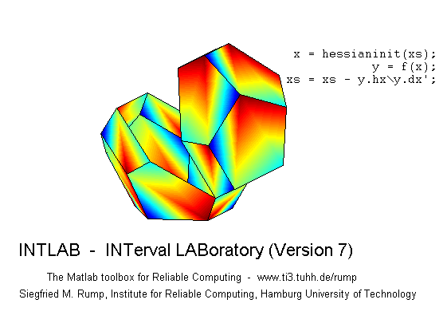

Interval arithmetic in INTLAB
Contents
- Redefinition of the interval arithmetic
- Definition of interval arithmetic
- Input out of range for real standard functions
- Why is a flag necessary?
- Why two modes?
- How to use the NaN-mode?
- How to use the ignore-mode?
- What is the difference between the two modes?
- Complex standard functions
- The empty set
- Enjoy INTLAB
Redefinition of the interval arithmetic
With Version 6 of INTLAB I redefined the interval arithmetic in INTLAB. Formerly, the empty set was represented by NaN. It turned out that a consistent definition of all interval operations avoiding NaN-results slows down EVERY interval operation in INTLAB. Therefore I choose to interpret a NaN-component as "no information".
Although infinity- or NaN-components are usually rare, taking care of them slows down simply the addition by up to a factor 3. I found this hardly acceptable.
Most users won't recognize any change. I recommend to visit the demo
" Interval computations "
first before continuing with this demo.
Definition of interval arithmetic
An interval component with value NaN is not empty but no information is available on that component. For example,
format compact short infsup X = [ infsup(3,inf) ; infsup(-1,2) ] X0 = 0 * X
intval X = [ 3.0000, Inf] [ -1.0000, 2.0000] intval X0 = [ 0.0000, 0.0000] [ 0.0000, 0.0000]
has one component "NaN" due to the multiplication 0*inf. Any operation with this component will result in a "NaN" component, such as
contains_0 = in(0,X0)
intersect( infsup(-1,4) , X0 )
contains_0 =
1
1
intval ans =
[ 0.0000, 0.0000]
[ 0.0000, 0.0000]
Input out of range for real standard functions
If for real standard functions part of the input is out of range, the result of the corresponding component will be NaN:
intvalinit('RealStdFctsExcptnNaN')
X = [ infsup(-2,9) ; infsup(0,4) ]
Y = sqrt(X)
===> Result NaN for real interval input out of range intval X = [ -2.0000, 9.0000] [ 0.0000, 4.0000] intval Y = [ NaN, NaN] [ 0.0000, 2.0000]
This is the default. However, one may choose to ignore input out of range. In this case a flag will be set:
intvalinit('RealStdFctsExcptnIgnore') X = [ infsup(-2,9) ; infsup(0,4) ] Y = sqrt(X) exception = intvalinit('RealStdFctsExcptnOccurred')
===> !!! Caution: Input arguments out of range are ignored !!!
intval X =
[ -2.0000, 9.0000]
[ 0.0000, 4.0000]
intval Y =
[ 0.0000, 3.0000]
[ 0.0000, 2.0000]
exception =
1
Why is a flag necessary?
In a number of applications it is useful to ignore input out of range. Although this definition is nice and clean, it needs some care. Mathematical assertions may only be true if no input out-of-range appeared during the calculation: A number of verification methods use Brouwer's fixed point theorem. It says that a continuous self-mapping of a non-empty, compact and convex subset of the R^n has a fixed point. Consider
f(x) = sqrt(x) - 1 .
There is no real x with f(x)=x. Ignoring input out of range, we obtain
intvalinit('RealStdFctsExcptnIgnore')
X = infsup(-2,9)
Y = sqrt(X)-1
===> !!! Caution: Input arguments out of range are ignored !!! intval X = [ -2.0000, 9.0000] intval Y = [ -1.0000, 2.0000]
and Y is contained in X, pretending f(X) is contained in X. No error message occurred. Hence we might conclude that f has a fixed point in X.
For a safe mathematical assertion, Y in X is not enough: We also need to check that X is non-empty and no input out-of-range occurred. Since the latter may have happened anywhere in a complicated computation, an out-of-range flag is mandatory.
Note that the flag is set independent of the mode. Checking the flag resets the flag.
Why two modes?
A casual user may forget to check the out-of-range flag (or might not even know of it). Therefore I found it necessary to define a safe default mode. This is the NaN-mode. Any operation with NaN produces a NaN. Also a NaN can never be enclosed in some interval, hence in(Y,X) is false in the example above.
How to use the NaN-mode?
The default NaN-mode can be used without any precautions. If during the computation of a result all operations are well-defined, the computed result is a true inclusion of the correct result.
If during the computation the input of some operation was out-of-range, the computed result will be NaN. More precisely, the corresponding components will be NaN, as in
intvalinit('RealStdFctsExcptnNaN')
X = intval(-1:1)
Y = log(X)
===> Result NaN for real interval input out of range intval X = [ -1.0000, -1.0000] [ 0.0000, 0.0000] [ 1.0000, 1.0000] intval Y = [ NaN, NaN] [ - Inf, - Inf] [ 0.0000, 0.0000]
How to use the ignore-mode?
First switch to the ignore-mode and reset the out-of-range flag.
intvalinit('RealStdFctsExcptnIgnore') intvalinit('RealStdFctsExcptnOccurred');
===> !!! Caution: Input arguments out of range are ignored !!!
If during a computation some input was out of range and therefore ignored, the flag will be set. For example,
format _ X = intval(1:2:5) Y = X-2 flag1 = intvalinit('RealStdFctsExcptnOccurred') Z = asin(Y) flag2 = intvalinit('RealStdFctsExcptnOccurred')
intval X =
1.0000 3.0000 5.0000
intval Y =
-1.0000 1.0000 3.0000
flag1 =
0
intval Z =
-1.5708 1.5708 NaN
flag2 =
1
If the flag is not set, then no out-of-range operation occurred in the whole computation. Again note that the flag is set both in the NaN- and the ignore-mode. For example,
format infsup intvalinit('RealStdFctsExcptnNaN') flag1 = intvalinit('RealStdFctsExcptnOccurred') X = midrad( -1:1 , 5e-5 ) Y = log(X) flag2 = intvalinit('RealStdFctsExcptnOccurred')
===> Result NaN for real interval input out of range
flag1 =
0
intval X =
[ -1.0001, -0.9999] [ -0.0001, 0.0001] [ 0.9999, 1.0001]
intval Y =
1.0e-004 *
[ NaN, NaN] [ NaN, NaN] [ -0.5001, 0.5000]
flag2 =
1
What is the difference between the two modes?
In the NaN-mode, the default and safe mode, the individual interval components carry the information whether or not some input out-of-range was ignored.
intvalinit('RealStdFctsExcptnNaN',0);
X = [ infsup(2,3) infsup(-1,4) -2 ]
sqrt(X)
intval X = [ 2.0000, 3.0000] [ -1.0000, 4.0000] [ -2.0000, -2.0000] intval ans = [ 1.4142, 1.7321] [ NaN, NaN] [ NaN, NaN]
In the ignore-mode, the expert mode, only the global information whether or not somewhere an input out-of-range occurred is available. However, the individual components show the result for all input inside-range.
intvalinit('RealStdFctsExcptnIgnore',0); X = [ infsup(2,3) infsup(-1,4) -2 ] sqrt(X) flag = intvalinit('RealStdFctsExcptnOccurred')
intval X =
[ 2.0000, 3.0000] [ -1.0000, 4.0000] [ -2.0000, -2.0000]
intval ans =
[ 1.4142, 1.7321] [ 0.0000, 2.0000] [ NaN, NaN]
flag =
1
Note, however, that real standard functions can be switched automatically to their complex pendant as follows:
intvalinit('RealStdFctsExcptnWarn') X = [ infsup(2,3) infsup(-1,4) ] midrad(sqrt(X)) flag = intvalinit('RealStdFctsExcptnOccurred')
===> Complex interval stdfct used automatically for real interval input
out of range, but with warning
intval X =
[ 2.0000, 3.0000] [ -1.0000, 4.0000]
intval =
< 1.5731 + 0.0000i, 0.1590> < 1.2247 + 0.0000i, 1.5812>
flag =
0
The warning may be suppressed using "intvalinit('RealStdFctsExcptnAuto')".
intvalinit('RealStdFctsExcptnAuto') X = [ infsup(2,3) infsup(-1,4) ] midrad(sqrt(X)) flag = intvalinit('RealStdFctsExcptnOccurred')
===> Complex interval stdfct used automatically for real interval input
out of range (without warning)
intval X =
[ 2.0000, 3.0000] [ -1.0000, 4.0000]
intval =
< 1.5731 + 0.0000i, 0.1590> < 1.2247 + 0.0000i, 1.5812>
flag =
0
Complex standard functions
It seems difficult to find a consistent definition when to set the out-of-range flag for complex standard functions. In particular, how should it be interpreted when the input interval covers the branch cut, or is at its boundary. Therefore I choose not to set the out-of-range flag for complex standard functions, independent of the input.
The empty set
In contrast to the ignore-mode, the empty set does not exist in the NaN-mode. This is a necessary compromise. Since NaN is interpreted as Not-an-Interval, another representation of the empty set would have been necessary.
However, the only operation in the NaN-mode, the result of which may be the empty set is intersection. However, numerous case distinctions in many programs would have been necessary to distinguish between NaN and the empty set - whatever the representation of the latter may be. All operations would be slowed down by that.
I think this is not worth it. If in some application computations with the empty set are important, please use the ignore-mode.
Enjoy INTLAB
INTLAB was designed and written by S.M. Rump, head of the Institute for Reliable Computing, Hamburg University of Technology. Suggestions are always welcome to rump (at) tuhh.de
intlablogo(35)